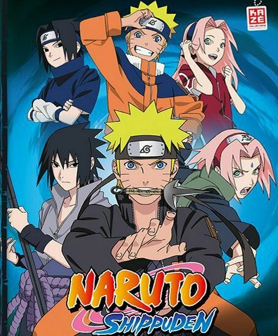

Chihiro inicia su viaje perdiendo a sus padres al meterse a curiosear a “otro mundo”, un mundo espiritual. Aquí la chica perderá su nombre y deberá adoptar una nueva identidad como Sen. Para sobrevivir en el mundo espiritual comenzará a trabajar y adaptarse a esa nueva sociedad.


Mitsuha es una adolescente que detesta su vida rural en el campo. Por otro lado, Taki es un chico que vive en Tokio y sueña con ser un artista o un arquitecto. Los destinos de estos jóvenes se entrelazan la noche en que dos estrellas caen del cielo, y comienzan a intercambiar sus cuerpos de la noche.
Shun Hashimoto es un joven aspirante a novelista que escapo a la isla de Okinawa cuando fue abandonado por su familia al revelarles que era gay. Mio Chibana es un aparentemente sombrío joven estudiando de 17 años que quedando recientemente huérfano lo único que hace fuera de estudiar es sentarse a mirar el mar hasta el anochecer.
Violet es una joven huérfana que desde pequeña ha sido convertida en un arma y ha servido al ejército de Leiden para luchar en la guerra. Mientras tanto ha estado a cargo del mayor Gilbert Bougainvillea, el único que la trataba de forma distinta debido a su falta de empatía. Cuando la contienda termina, Violet queda despojada de su función y de la única vida que conoce.
Shôko Nishimiya, una estudiante de primaria sorda, empieza a sentir el bullying de sus nuevos compañeros cuando se cambia de colegio. El peor de todos es Ishida Shôya, quien termina por forzar que Nishimiya se cambie de escuela. Años después, Ishida buscará la redención de sus malas acciones."